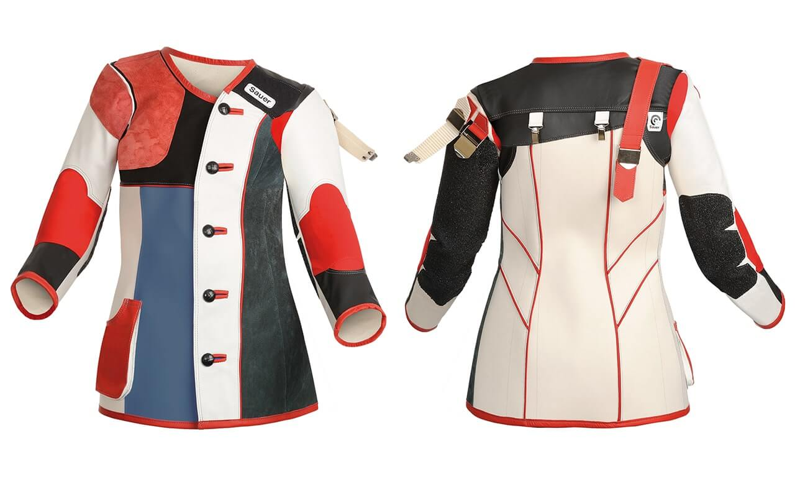
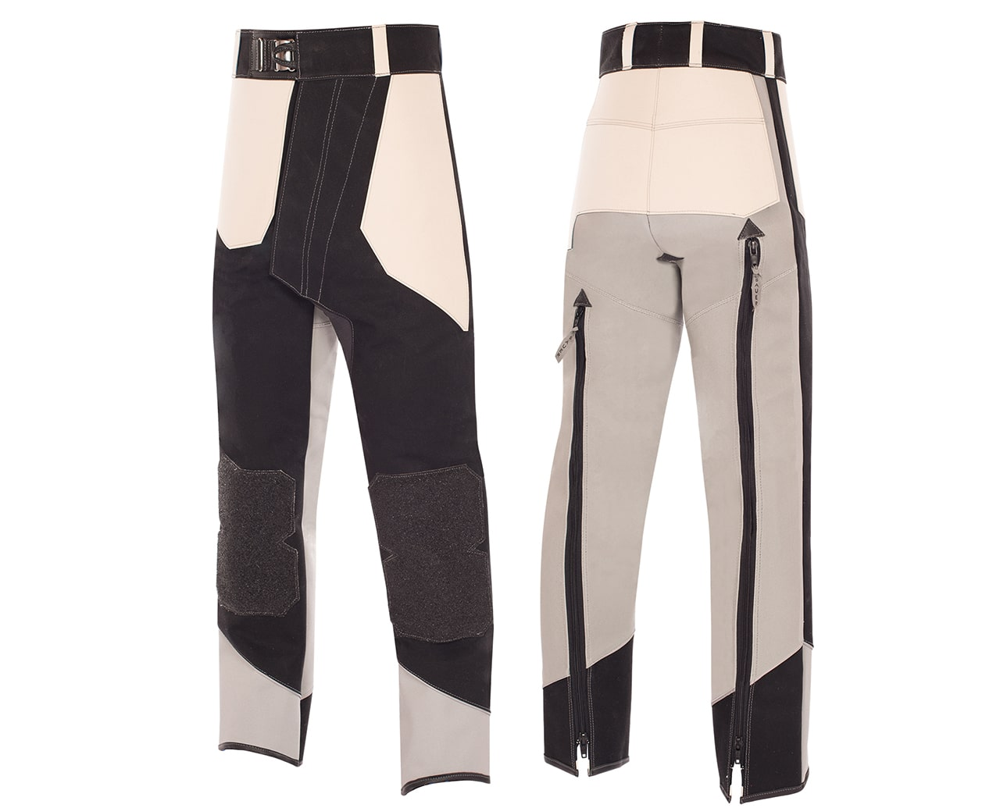
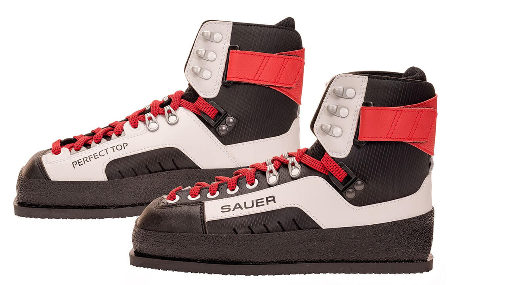
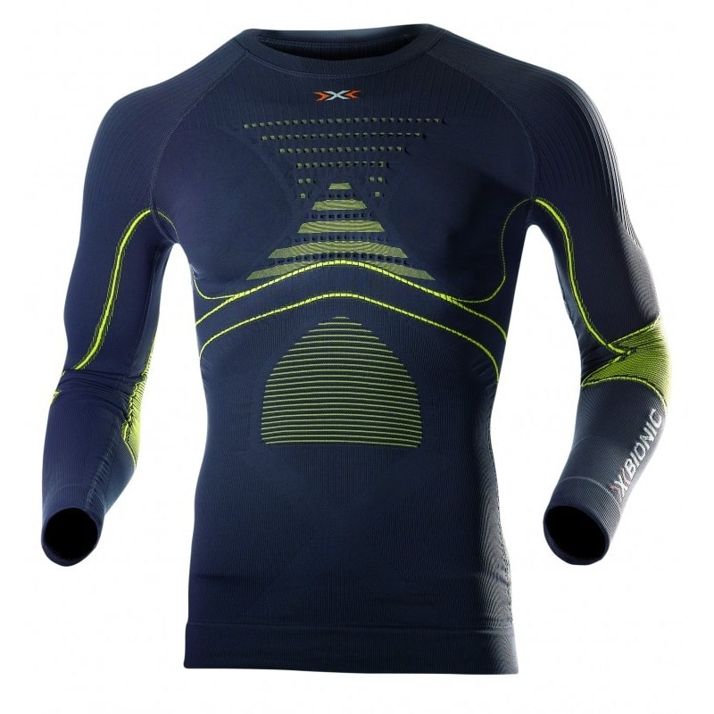
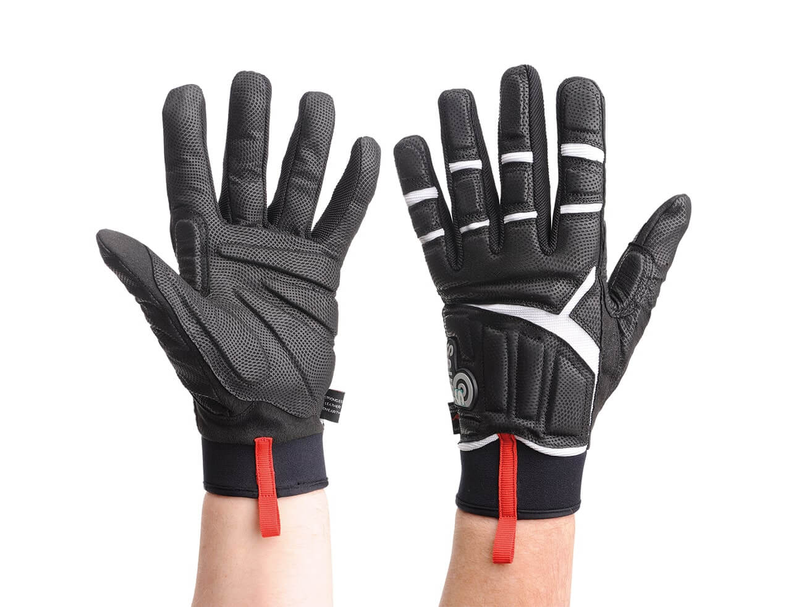
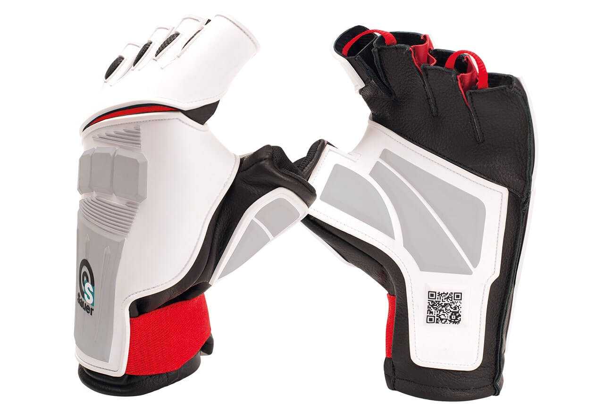
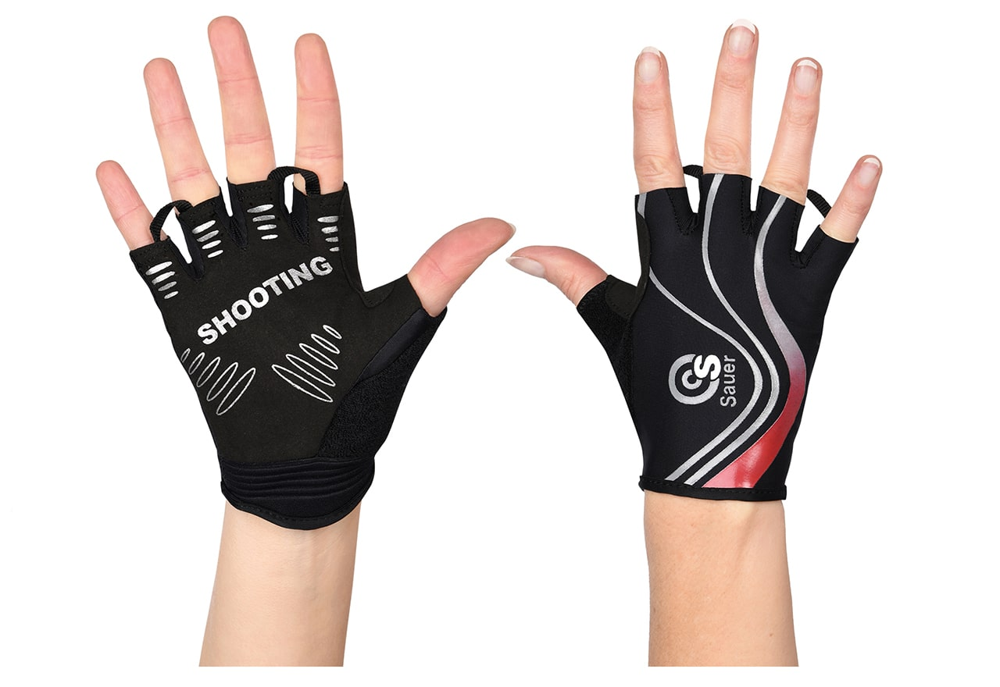
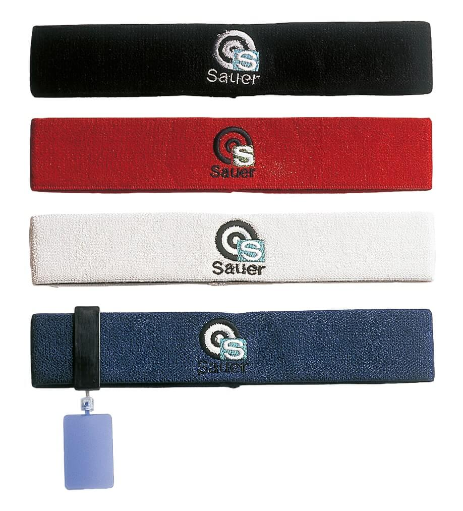
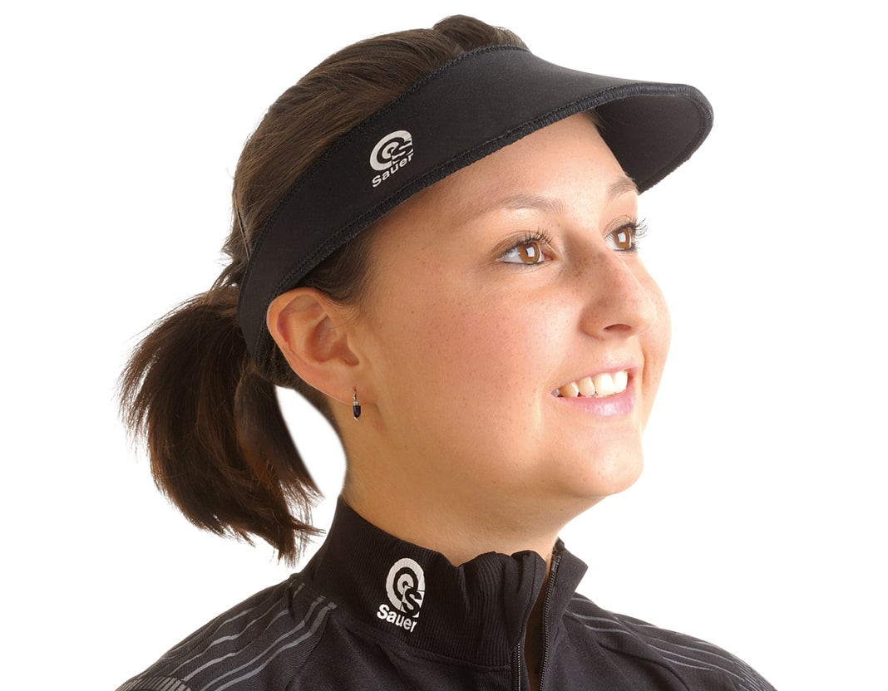
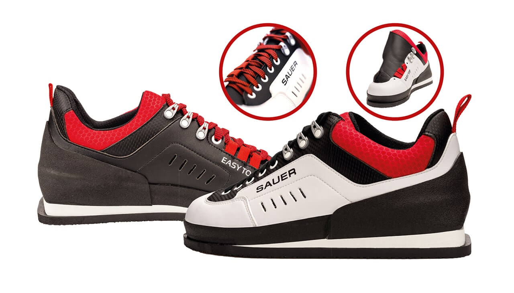

In the standing position, the shooting jacket serves as a support for your muscles during the holding work. Like a protective cover, it protects your back in particular. Thanks to its padding and pressure insulation, it also guarantees slip resistance at the contact points.
You will find a large selection of high-quality shooting jackets in different price ranges in the Sauer Shooting Sportswear range, for example. The top model is certainly the "ADVANTAGE EXTRA", which provides excellent support for your muscles with its sturdy cotton-backed caoutchouc material. The caoutchouc is also extremely dimensionally stable and resistant to distortion, which makes it particularly durable. To prevent the support arm from slipping, this side is made of suede, which has particularly adhesive properties.
In the standing position, the shooting trousers give your entire system stability and also provide the necessary support for your spine. They take on a supporting function and offer you protection against strong pressure loads.
For the necessary support of your spine, the "COMFORT EXTRA" shooting trousers from Sauer Shooting Sportswear are recommended. With a material combination of double canvas and caoutchouc, the trousers are extremely resistant to distortion. The caoutchouc sections also provide you with optimum stability in your position. In the range of the manufacturer Sauer Shooting Sportswear you will find other excellent models of shooting trousers.
With their special soles, which have an enlarged surface, the shooting shoes promote good impact balance, especially in the standing position. They also offer good grip on most surfaces. The lacing across your ankle stabilizes it, which reduces body sway and improves your shooting stance.
With ample padding and extended lacing, good shoes ensure a firm stand. A suitable shoe model is, among others, "PERFECT TOP" from Sauer Shooting Sportswear. In combination with the individually adjustable tongue solution, your position feeling is further supported with these shoes. With the new PTU sole for better stability, the PERFECT TOP meets the optimal sports orthopaedic requirements for your foot.
Not all clothing is suitable as underwear under shooting jackets and trousers. In addition to the permitted maximum thickness of 2.5 mm, your shooting underwear should be tight-fitting and breathable. You should also make sure that there are no irritating seams in the areas of the support points, elbows and hips.
The "X-Bionic" underwear from TEC-HRO has established itself as an excellent collection for shooting underwear. Different fabric structures ensure a perfect body climate, and muscles and joints are also supported. Special ventilation channels ensure a great evaporation rate in this shooting underwear and thus cools when you sweat - at the same time it warms when you are cold. The compression properties of this clothing can minimally reduce the pulse rate and feels like a second skin.
Your shooting glove of the support hand prevents slipping under the front-stock with its rubber pads. The front-stock is held in place by these rubber pads. When choosing your glove, you should always take a closer look at your hand position to decide which glove is right for you. Depending on the design, the glove can redirect the pressure on your wrist unfavourably or squeeze blood vessels. Shooting without a glove can also make sense depending on the positioning of the support hand.
Partially inserted pads made of biogel in the glove provide ideal padding for your hand and at the same time allow your wrist to move freely. The "PREMIUM" glove model from Sauer Shooting Sportswear uses such pads. In addition, the inside of the glove is equipped with embossed leather, making the glove ideal for gripping the sports rifle. If you prefer to rest your rifle on your fist, the "TOP TEN" glove from Sauer Shooting Sportswear is more suitable for you. With its new caoutchouc moulded parts, your wrist is optimally stabilised and offers you a non-slip contact surface. Sauer Shooting Sportswear also has many other gloves in its range.
 With the shooting glove on your trigger hand and the rubber coating on the inside, you increase the connection between your palm and the grip. Especially when your palms are wet, the constant rubber coating facilitates a consistent grip on the grip.
For your trigger hand we recommend a firm grip and at the same time ergonomic model such as "CONTACT IV" from Sauer Shooting Sportswear. Thanks to its breathable material combination and the silicone decor on the inside, the glove offers you a firm grip even in long and strenuous competitions and training sessions.
In order to capture the target image optimally and to avoid errors in the target image, you have the option of covering the non-target eye with an eye-shield. This eye-shield is ideally light in colour to keep the contrast for the eye as low as possible. A frosted glass version of this eye-shield is the most comfortable solution for your eye. With a further shield in the side area of your aiming eye, the focus of the aiming can be increased even further. You can easily attach the eye-shield with the help of a headband or shooting glasses.
Absorbent headbands offer you a high level of wearing comfort. Sauer Shooting Sportswear offers such headbands including various eye-shields. You can detach the shields with a simple click fastener for washing the headband and also adjust them easily. The ball joint allows you to fit different shields and fold them up for a clear view when the competition is over.
Unwanted light entering your aiming eye can cause a change in pupil size. To protect against such unwanted light falling between the aiming eye and the sight, a flexible visor or a shooting cap with a small front screen can be used. The front screen thus protects you from stray light from the standing light when optimally positioned on the head. Without a shooting cap, your aiming eye is subjected to greater strain and may tire more quickly.
The "SAUER VISOR" from Sauer Shooting Sportswear protects your eyes effectively and keeps their shape. Thanks to the sewn-in Velcro fastener, head size is no longer an issue and even putting it on with a braid is no longer a problem.
The shooting shoes give good impact balance due to their special soles (enlarged standing surface). The sole also offers you good grip on most surfaces. The shooting shoes are equipped with a slightly forward sloping footbed and thus ensure the best possible footing.
The "EASY TOP" shoe model from Sauer Shooting Sportswear, for example, is recommended as a sports shoe for shooting with a pistol. The integrated tongue solution enclosing the back of the foot and the extended lacing allow the foot to be optimally fixed in the shoe. The strong padding ensures that there are no pressure points. The elevation in the heel area of the insole relieves the back when standing for long periods and prevents premature fatigue. With the new PTU sole for better stability, the EASY TOP meets the optimal sports orthopaedic requirements for your foot.
In order to capture the target image optimally and to avoid errors in the target image, it is possible to cover your non-target eye with an eye-shield. This eye-shield is ideally light in colour to keep the contrast for your eye as low as possible. A frosted glass version of this eye-shield is the most comfortable solution for your eye. With a further aperture in the side area of your aiming eye, the focus of the aiming can be increased even further. You can easily attach the apertures with the help of a headband or shooting glasses.
Absorbent headbands offer you a high level of wearing comfort. Sauer Shooting Sportswear offers such headbands including various eye-shields. You can detach the eye-shields with a simple click fastener for washing the headband and also adjust them easily. The ball joint allows you to fit different visors and fold them up for a clear view when the competition is over.
Unwanted light entering your aiming eye can cause a change in pupil size. To protect against such unwanted light falling between the aiming eye and the sight, a flexible visor or a shooting cap with a small front screen can be used. The front screen thus protects you from stray light from the standing light when optimally positioned on the head. Without a shooting cap, your aiming eye is subjected to greater strain and may tire more quickly.
The "SAUER VISOR" from Sauer Shooting Sportswear protects your eyes effectively and keeps their shape. Thanks to the sewn-in Velcro fastener, head size is no longer an issue and even putting it on with a braid is no longer a problem.